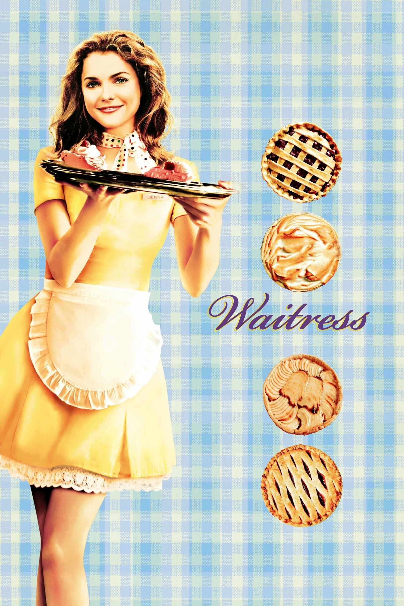

The Blues Brothers

I have yet to see a movie that rivals the same great balance of comedy, action, and musical number like this movie. Going from a simple down to earth redemption story to a wild cross country adventure where the brothers go into all kinds of mayhem because "they're on a mission from god". Along the way encountring some fun characters all of which can range from members of the brothers' band to people who are after thier flesh and bood. Culminating in a hilarious and overly stimulating finale full of car chases then crashes, army men coming in from all sides, and basically everything you get when you get 5 stars in GTA.
A Silent Voice

One of if not the most popular film from the late Kyoto Animation. Based on a popular manga series of the same name tells the tale of a deaf young girl who grows up being bullied by many students. One of the bullies in particular who didn't speak to the girl in a while comes into high school older and wiser. From there he hopes to reconnect with the girl and redeem himself from his past. Along the way we go through a story filled with many themes of romance, life, growing up, and atoning fro your mistakes. It's a beautiful film that shows a great depeiction of living with a disorder and finding your place in the world.
The Iron Giant

The most nostagic film so far, I vividly remember waking up in the morning poping in this movie in my VHS player and being amazed by what I see. It's such a heart warming outsider meets the extrateressital story while also being a bit of an homage to 60's bee movies centered around giant creatures or robots in this case. The giant himself is such a interesting concept where his origins are a mystery but it's intentional for message of the film telling no matter who or what you are or where you're from, you chose who you chose to be. It's also great lookign film as well, it shows that Warner Bros had the ability to make thier own 2D art style that doesn't have to copy Disney.
The Menu

Despite being the more recent film on my list, it actually holds a lot of cool aspects that I haven't seen in many films. For one a good majority of the movie literally takes place in one room that nobody can escape from. Giving a real sense of emersion and mystery to the film as each of the secrets from the meals are served. Each of the guests are wealthy people with unique different backgrounds and positions. With each of them suffering from some form of exposure from the head chef and his crew, as he serves them with different foods showing thier darker side. Almost like Squid Game with more dinner scenes and like one game.
The Truman Show

A comedy disgusing itself as a horror movie. I heard about this film from my brother in law telling me that it was pretty great film and judging by the premise I couldn't really tell what it was about. But then after watching it I can see how innovative and experimental it was, having your whole life turn out to be some sick TV show broadcasted for the whole world in a giant dorm away from the real world. It was really cool seeing all the different camera views and angles used to monitor Truman and broadcast his life. Jim Carrey also does a great performance here showing that he's capable of doing dramatic roles as much as comedy.
Singin' in the Rain

Back in my 5th grade years I saw this movie for music class to study choreagraphy and it was probably the first time I got engaged with a classic movie. I grew up listening to songs like "Make Em' Laugh", "Fit as a Fiddle", and "Good Morning" all the time thinking they were super catchy. The film itself is cool deep drive into filmmaking back then with how motion pictures were becoming innovtive with new tech in recording and voice over. It captured alot about drama that often occured behind the scenes some of which can still happned in the modern day.
12 Angry Men

One small lecture in high school about a small little old movie and it ended up being one of my favorites. Similar to "The Menu" it's a film that takes place in one room. But instead of a bunch mingling rich people, it's 12 men arguing and deciding the fate of an accused victim. It's a film that deals with many topics such as beleif, entitlement to opinion, and the ethics behind the mindset of "innocent until proven gulity". Each of the jury men each have different backgrounds that make up thier view on the crime at hand.
The Sting

I'll admit I was in a phase back then where I would constantly watch old movies from DVDs I'd find at the Thrift store, "The Sting" in particular was one of those movies that I'll admit was long but interesting. It was one fo the films back then that focused more on the storytelling from characters actions through comedic chase scenes, playing poker, or simple cons in grifting. It helps too that it has a very likable main duo played by Paul Newman and Robert Redford with some great chemsitry and witty writing.
500 Days of Summer

I'm sure there were movies that everyone sees once in a while that helped them with something hard in thier life. This one for me gave a real reality check with aa certain point in my life. Like the narrator says it's a story about boy meets girl, but not a love story instead it's a story about unrequited feelings. It's one of the rare movies that try to give a more realistic depiction of someone going through some unrealistic idea of love and how others who view love as something disposable each of them going to an end result different than what they expected.
Sweeny Todd

You'll be seeing a lot movie musicals on this list, I really love them how they can often range in genre. Although you never normally see a ton of them in horror, usually it comes in the form of this and maybe Rocky Horror. But when it does come around it can be quite the spectable with Sweeny Todd telling the story of man who takes his vengence on the villan who took away his wife and daughter, ending up to kill all those in London out of rage. The songs themselves are a joy to listen despite the murderous undertones, like Sweeny sings about missing his child while slicing people by the throat. I know not many people are fans of Johnny Depp espically during an era when he, Helena Bonham Carter, and Tim Burton were pracitally everywhere back then. But the acting, vocal performances, and direction all have some great aspects that make up the strenghts of the film.
West Side Story

An oldie and a goodie, ironically I saw this at the same time as the Steven Spielberg remake. For an old film it does a great job with the cinematography showing off the grandness of 1960's New York. The story is espically great with out adapts the classic Romeo and Juliet story with themes of racism, city cliques, and jail delinquency. Out of all the musical movies this one probably has the best choreagraphy for every dance sequence is grand with so many dancers in one scene. The songs themselves are really catchy it's easy to see how they became really popular throughout pop culture.
Waitress
Last be certainly nto least, in fact quite the most underrated film on my list. Waitress is a very heart warming and engaging story about an abusive relationship, unepxected pregancy, and motherhood. It's even has some unqiue story elements such the pie making wher the man character imagines making a pie based on how she's feelings at the moment. Along with a pretty fun supporting cast one of which was played byt he director of the movie. It was espically encouraging for me cause I was going through something similar that the main character was going through at the time and it just felt very relatable for me.